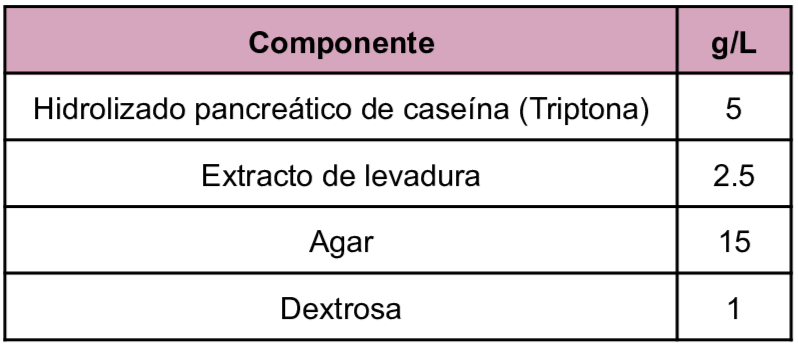
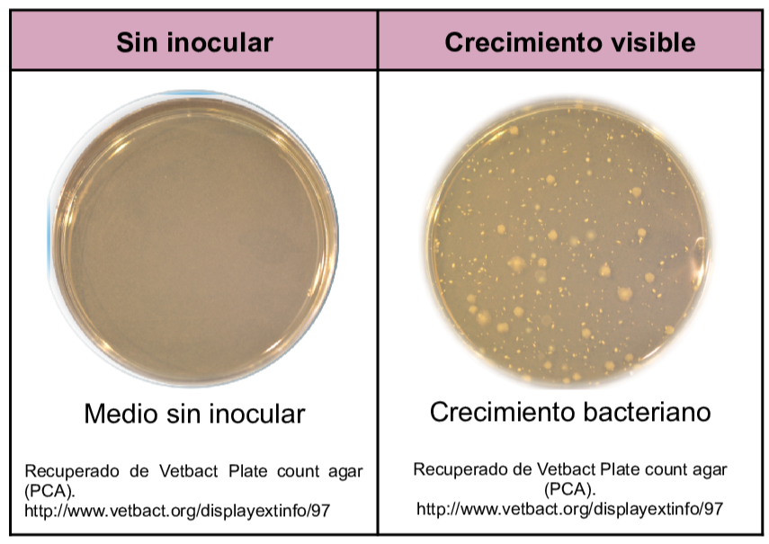

Es un medio implementado para el recuento de bacterias en análisis de aguas, aguas residuales y alimentos ya que gracias a su composición rica en nutrientes permite el crecimiento de la mayoría de bacterias mesófilas aerobias no exigentes.
La peptona de caseína proporciona al medio nitrógenos, aminoácidos, vitaminas y minerales que son necesarias para el crecimiento microbiano, el extracto de levadura como fuente de vitaminas de tipo B. Mientras que la dextrosa es la fuente de carbono y energía. El agar como agente solidificante.
Composición

pH a 25°C 7.0±0.2
Resultados Posibles
Se puede esperar un crecimiento de tipo variado dependiendo del microorganismo inoculado , las colonias recuperadas a partir de este medio son funcionales para pruebas bioquímicas.

Referencias
DIFCO Francisco Soria Melguizo S.A. (2009) Ficha Técnica 770572 https://amyd.quimica.unam.mx/pluginfile.php/9879/mod_folder/content/0/Agar%20cuenta%20est%C3%A1ndar-Mes%C3%B3filos.pdf?forcedownload=1
Romero, G. (2023) “Guía General de Medios de Cultivo Utilizados en la Industria” [Tesis de Licenciatura, Universidad Nacional Autónoma de México]. Repositorio DGBSDI. https://ru.dgb.unam.mx/server/api/core/bitstreams/30f99386-fb11-4b83-8931-b260bbcd5eef/content